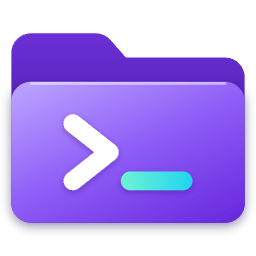
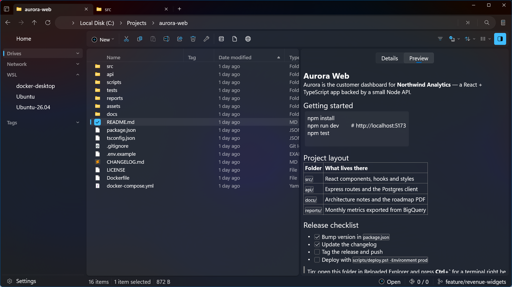

The file manager built for developers. Tabs, dual pane and a real terminal that opens right in the folder you're in, plus WSL, Git and instant previews.
Support and documentationThe Microsoft Store release is being prepared. A download link will be added after publication.
Windows 10 (2004) and Windows 11 · x64 and ARM64

Press Ctrl+` for PowerShell, CMD or WSL in the current folder. It runs on a genuine Windows pseudo-console, so colours and cursor movement work.
Browse \\wsl$ and open that distro's shell at the matching Linux path.
See the current branch in the status bar, and clone, fetch, pull, push and sync without leaving the window.
Markdown, code, PDF, Excel and PowerPoint files preview instantly. No Office needed.
Work in several folders at once, with tabs, side-by-side panes and a Columns view.
Copy relative or Linux paths, create Markdown and HTML files in one click, and open anything from the command palette.
App settings and file operations stay on your PC. Optional Git and network features connect to the services you choose. Read our privacy policy for details.
Light and dark themes with Mica backdrops, in more than 40 languages.